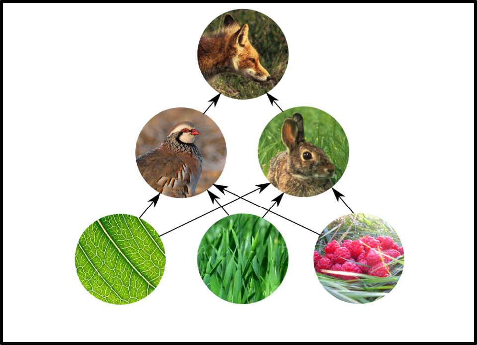
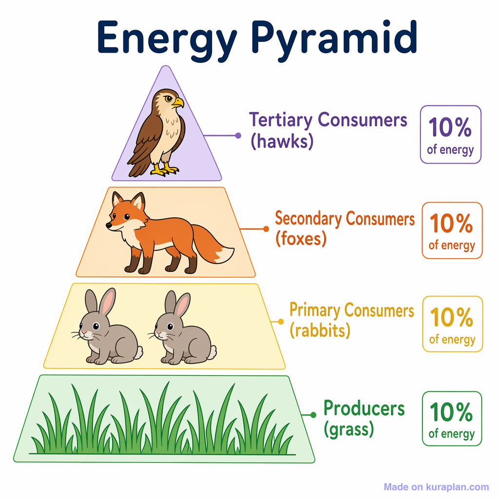
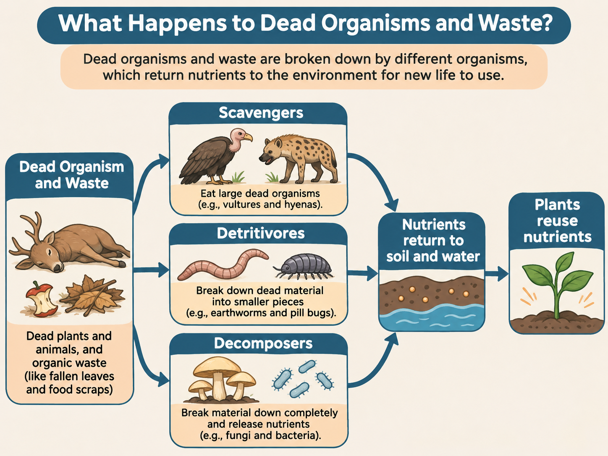
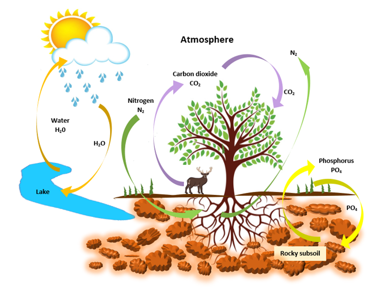

Energy and Matter in Ecosystems
Explore how energy moves through ecosystems and how matter is recycled.


How Does Energy Move Through an Ecosystem?
Every organism needs energy to survive. Most energy in an ecosystem begins with the Sun. Producers, such as plants and algae, capture sunlight to produce food. When an organism eats another organism, some of that stored energy is transferred to the consumer.
A food chain shows one path that energy can take through an ecosystem.
Sun → grass → rabbit → fox
The arrows show the direction that energy moves. The arrow points from the organism being eaten toward the organism receiving the energy.
A food web shows many connected food chains in the same ecosystem. Most organisms eat more than one type of food and may also be eaten by several different organisms. Food webs give us a more realistic picture of how energy moves through an ecosystem.
Why Is Less Energy Available at Higher Trophic Levels?
Organisms in a food chain or web can be grouped into trophic levels based on how they get their energy.
- Producers make their own food and form the first trophic level.
- Primary consumers eat producers.
- Secondary consumers eat primary consumers.
- Tertiary consumers eat secondary consumers.
As energy moves from one trophic level to the next, only about 10% of the energy is transferred to the next level. The remaining energy is used by organisms for life processes such as movement, growth, and maintaining body functions, and is also released as heat.
Example: If producers contain 1,000 units of energy, primary consumers may receive about 100 units, and secondary consumers may receive about 10 units.
This is the reason why higher trophic levels have less energy available.
Main Idea: Only about 10% of energy is transferred to the next trophic level.

Energy Available at Each Trophic Level
| Trophic Level | Example Organism | Energy Available |
|---|---|---|
| Tertiary Consumer | Snake | 10 units |
| Secondary Consumers | Frog | 100 units |
| Primary Consumer | Grasshopper | 1,000 units |
| Producers | Grass | 10,000 units |

What Happens to Dead Organisms and Waste?
When organisms die or produce waste, that matter does not disappear. Different organisms help break it down and return nutrients to the ecosystem.
- Scavengers eat dead animals. Examples include vultures and hyenas.
- Detritivores eat small pieces of dead organisms and waste. Examples include earthworms and pill bugs.
- Decomposers, such as bacteria and fungi, break down dead matter and waste into simpler substances.
Unlike scavengers and detritivores, bacteria and fungi do not eat in the same way animals do. They use external digestion and absorption. They release enzymes onto dead material, break it down outside their bodies, and then absorb the smaller nutrients.
Decomposers are important because they return nutrients to the soil and water. Plants can take up those nutrients and use them again.
Together, scavengers, detritivores, and decomposers help clean up dead material and keep matter moving through the ecosystem.
Main Idea: Dead matter does not disappear. It is broken down and recycled.
Why Does Matter Keep Getting Reused?
Unlike energy, which flows through an ecosystem and is released as heat, matter is recycled. Important nutrients move and are recycled repeatedly between organisms and the air, water, and soil through nutrient cycles.
- Carbon: Carbon moves through organisms, the atmosphere, water, and soil. Plants take in carbon dioxide during photosynthesis, and carbon moves through food webs when organisms eat.
- Nitrogen: Nitrogen is needed to build proteins and DNA. Most organisms cannot use nitrogen gas directly from the atmosphere. Bacteria help change nitrogen into forms that plants can absorb from the soil.
- Phosphorus: Phosphorus is important for DNA, ATP, and bones and teeth. It mainly moves through rocks, soil, water, plants, and animals.
When organisms die or produce waste, decomposers help return nutrients to the environment, where they can be used again.
Main Idea: Energy flows through ecosystems, but matter cycles and is reused.
